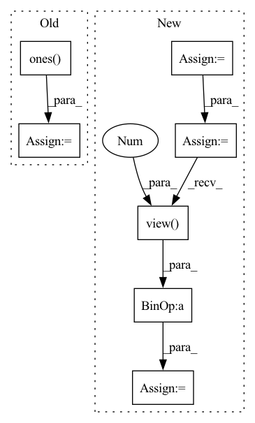

Pattern ID :20333

Before Change
edge_weights = torch.ones(edge_index.size(1), dtype=torch.int,
device=edge_index.device)
else:
edge_weights = np.ones(edge_index.shape[1], dtype=np.int)
degree = weighted_degree(index, edge_weights, num_nodes=num_nodes)
return edge_index, edge_weights / degree[index]
After Change
if backend is torch_sparse:
assert edge_weights is None
deg = edge_index.sum(dim=dim).to(torch.float)
deg_inv = deg.pow(-1.0)
deg_inv[deg_inv == float("inf")] = 0
edge_index = deg_inv.view(-1, 1) * edge_index
return edge_index, None
index = edge_index[dim]
In pattern: SUPERPATTERN
Frequency: 3
Non-data size: 7
Instances
Fragment ID: 66016271
Project Name: torchspatiotemporal/tsl
Commit Name: f28e5a2fddc34eeb90a13c113512c8ab12b6138b
Time: 2022-07-20
Author: ivan.marisca@hotmail.it
File Name: tsl/ops/connectivity.py
M Class Name: AnonimousClass
N Class Name: AnonimousClass
M Method Name: normalize(4)
N Method Name: normalize(4)
M Parent Class:
N Parent Class:
M File Name: tsl/ops/connectivity.py
N File Name: tsl/ops/connectivity.py
M Start Line: 181
M End Line: 187
N Start Line: 215
N End Line: 225
'>
Before Change
index = edge_index[dim]
if edge_weights is None:
if isinstance(edge_index, Tensor):
edge_weights = torch.ones(edge_index.size(1), dtype=torch.int,
device=edge_index.device)
else:
edge_weights = np.ones(edge_index.shape[1], dtype=np.int)
degree = weighted_degree(index, edge_weights, num_nodes=num_nodes)
return edge_index, edge_weights / degree[index]
After Change
if backend is torch_sparse:
assert edge_weights is None
deg = edge_index.sum(dim=dim).to(torch.float)
deg_inv = deg.pow(-1.0)
deg_inv[deg_inv == float("inf")] = 0
edge_index = deg_inv.view(-1, 1) * edge_index
return edge_index, None
index = edge_index[dim]
'>
Fragment ID: 66016329
Project Name: torchspatiotemporal/tsl
Commit Name: 50089afdf23de12eb6d11e9d5e7e64d949d45611
Time: 2022-08-18
Author: ivan.marisca@hotmail.it
File Name: tsl/ops/connectivity.py
M Class Name: AnonimousClass
N Class Name: AnonimousClass
M Method Name: normalize(4)
N Method Name: normalize(4)
M Parent Class:
N Parent Class:
M File Name: tsl/ops/connectivity.py
N File Name: tsl/ops/connectivity.py
M Start Line: 181
M End Line: 187
N Start Line: 215
N End Line: 225
'>
Before Change
def inverse_rotation_warp(img, rot, intrinsics, padding_mode="zeros"):
b, _, h, w = img.size()
cam_coords = pixel2cam(torch.ones(b, h, w).type_as(
img), intrinsics.inverse()) // [B,3,H,W]
rot_mat = euler2mat(rot) // [B, 3, 3]
After Change
B, _, H, W = img.size()
R = euler2mat(rot) // [B, 3, 3]
P = torch.matmul(intrinsics, R)
world_points = depth_to_3d(torch.ones(B, 1, H, W).type_as(img), intrinsics) // B 3 H W
cam_points = torch.matmul(P, world_points.view(B, 3, -1))
pix_coords = cam_points[:, :2, :] / (cam_points[:, 2, :].unsqueeze(1) + 1e-7)
pix_coords = pix_coords.view(B, 2, H, W)
pix_coords = pix_coords.permute(0, 2, 3, 1)
pix_coords[..., 0] /= W - 1
pix_coords[..., 1] /= H - 1
pix_coords = (pix_coords - 0.5) * 2
projected_img = F.grid_sample(img, pix_coords, padding_mode=padding_mode, align_corners=True)
'>
Fragment ID: 66016328
Project Name: jiawangbian/sc_depth_pl
Commit Name: 6a50fb9e99035b26acd8d44a2965c6a5b8eaa4da
Time: 2022-08-18
Author: jiawang.bian@gmail.com
File Name: losses/inverse_warp.py
M Class Name: AnonimousClass
N Class Name: AnonimousClass
M Method Name: inverse_rotation_warp(4)
N Method Name: inverse_rotation_warp(4)
M Parent Class:
N Parent Class:
M File Name: losses/inverse_warp.py
N File Name: losses/inverse_warp.py
M Start Line: 275
M End Line: 284
N Start Line: 129
N End Line: 140